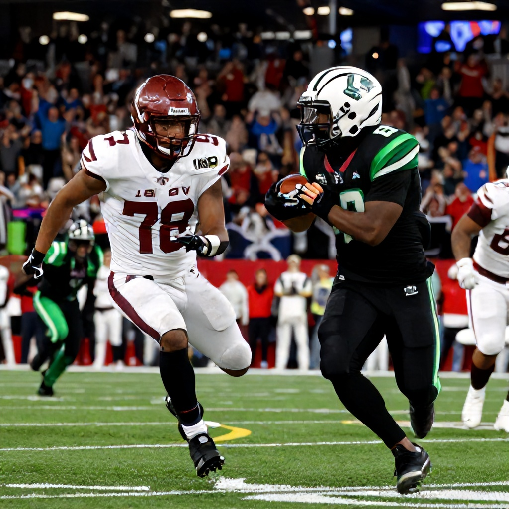

As the CFL season heats up, the rivalry between the Calgary Stampeders and Saskatchewan Roughriders stands out as one of the most compelling storylines in the Western Division. With both teams aiming to secure crucial early-season momentum, their matchup on Saturday, June 20, 2026, at McMahon Stadium in Calgary promises to be a thrilling contest.
A Rivalry Rooted in History
The Calgary-Stampeders vs Saskatchewan Roughriders rivalry is more than just a regular-season game—it's a clash steeped in history and regional pride. Both franchises have been pillars of the CFL for decades, each bringing their own fanatical support and competitive spirit to the field. This rivalry has often shaped the trajectory of both teams' seasons, with each victory carrying significant weight in the division standings.
Home-Field Advantage Matters
With the game set to take place at McMahon Stadium, the Stampeders enjoy a distinct home-field advantage. The venue, known for its electric atmosphere and passionate fans, has historically been a fortress for Calgary. The team’s ability to harness this energy can prove decisive, especially in tight contests where every point matters.
Early Season Stakes
The early portion of the season sets the tone for the rest of the campaign. For both teams, securing wins early helps establish confidence and build momentum heading into the playoffs. The Stampeders, looking to solidify their position in the Western Division, face a critical test against a resilient Roughriders squad that has shown resilience in recent matchups.
Betting Context
While specific betting lines for the upcoming Calgary vs Saskatchewan game are not yet available, the intensity of this rivalry typically translates into compelling odds when they do emerge. Fans and bettors alike will be watching closely to see how the market reacts to what could be a pivotal early-season battle.
Looking Ahead
As the CFL season progresses, games like these serve as benchmarks for both teams’ development and competitiveness. Whether it’s the Stampeders defending their home turf or the Roughriders seeking an upset, this matchup will undoubtedly provide fans with a showcase of high-level football and fierce competition.
With the stakes high and the rivalry intense, the stage is set for another memorable chapter in the storied history of the Calgary Stampeders vs Saskatchewan Roughriders rivalry.